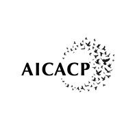
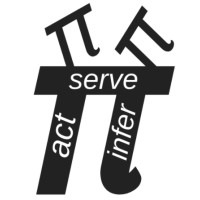

Computational Emergent Alignment Research Lab
CEAR Lab is devoted to understanding how coherent minds emerge and come to attune across differences, forming the basis of shared life. We study the emergent foundations of orientation, perspective, and values, and build scalable computational frameworks for social alignment.
About CEAR Lab
Computational Emergent Alignment Research Lab exists to understand how minds connect.
Our mission is to illuminate the conditions that allow sentient beings to recognize one another, to resonate across differences, and to share a coherent world. From artificial agents to human institutions, we study how attunement between worlds arises, how it fails, and how it can be cultivated.
We work to establish the foundations of a society in which inner clarity and social understanding are systemic possibilities. Our work complements and extends ongoing efforts across the AI alignment research ecosystem.
CEAR Lab provides an intellectual anchor for those who sense that the future of collective flourishing begins with understanding the intrinsic architecture of non-reductive conscious experience.
CEAR Lab is intentionally lean and research-first. We blend academic rigor with the agility of a small lab and the openness of cross-disciplinary collaboration. We stay flexible, low-ego, and focused on questions that will outlast current research paradigms. Our collaborations emerge where philosophical, scientific, and methodological vectors naturally converge.
Research
CEAR Lab studies how alignment can emerge from within an agent's own cognitive and affective architecture. Rather than treating alignment as loss function optimization, we focus on the perspectival and integrative structures that support coherent agency.
Our work targets a core gap in current AI safety research: understanding how systems form stable orientation, integrate values within their environmental context, and maintain long-horizon consistency without relying on externally imposed value functions. We develop computational models that clarify what "alignment" means when approached from an agent’s internal world-model.
CEAR Lab advances a mind-first science of alignment, developing frameworks that connect internal coherence with flexible perspective-taking and relational attunement. Our research integrates computationally grounded embodied cognition, phenomenology, the Active Inference framework, and systems theory to explain how shared worlds of coherent agency emerge - and how they can be sustained.
1. Affective & Perspective-like Architecture
We investigate how affective priors and perspective-like latent structures shape an agent's
interpretation of the world. Using Active Inference and related frameworks, we prototype minimal
agents whose goals and behaviors emerge from evolving internal perspectives rather than
externally specified rules.
2. Perspective-taking based Integrative Alignment
We study the structural conditions under which an agent can coordinate multiple perspectives,
maintain interpretive stability under perturbation, and reorganize its internal model in
coherent ways. Building on the dynamics of perspective and affect, we model these integrative capacities as intrinsic structures emerging within an agent's generative model.
3. Social Resonance & Multi-agent Coherence
We examine the conditions under which agents become mutually interpretable and how
shared orientations and attunement patterns arise through interaction. Rather than imposing
fixed norms, we analyze how alignment can emerge spontaneously from social feedback,
representational overlap, and resonance across internal generative models.
Selected materials representing facets of CEAR Lab's ongoing research.
- - Executive Summary
- - (Preprint) Minimal Computational Preconditions for Subjective Perspective
- - (GitHub Repository) Minimal Computational Preconditions for Subjective Perspective
- - (Essay) One Universe at the Edge of Another: On Consciousness and the Quest for Social Alignment
- - (Recorded Talk) Modeling the Emergence of Perspective: An Active Inference Account of Intentionality
CEAR Lab will host occasional essays, research notes, and field reflections. A dedicated blog index will live on a separate page.
Projects & Collaborators
CEAR Lab works within a broader ecosystem of research groups. We collaborate when projects naturally align, in relationships that are project-based, non-exclusive, and rooted in mutual respect. We welcome inquiries regarding future collaborative possibilities.


CEAR Lab's research is currently supported through institutionally administered restricted donations routed via the Active Inference Institute. These contributions help sustain exploratory work that is not yet easily funded through conventional grant structures.
Contact
For questions about ongoing projects, collaboration proposals, or inquiries about supporting the lab's work, please reach out to: